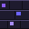

Image Rendering Showcase
Explore how the CSS image-rendering property controls
scaling interpolation, ensuring retro pixel art remains razor-sharp
while photographs stay beautifully smooth.
What is image-rendering?
Understand how the browser scales images beyond their native resolution.
By default, when browsers upscale low-resolution images, they apply bilinear or bicubic filtering to smooth out the transition between pixels. While this is ideal for photographs, it makes pixel art look blurry and smudged.
The image-rendering CSS property lets you override this
behavior. By setting it to pixelated or
crisp-edges, you instruct the browser to use
nearest-neighbor interpolation, keeping the sharp, blocky edges of
pixel art perfectly intact.
image-rendering: auto;
/* Keep pixels sharp using nearest-neighbor scaling */
image-rendering: pixelated;
/* Maintain high contrast for low-res vectors and sprites */
image-rendering: crisp-edges;
Side-by-Side Comparison
Witness the difference in scaling quality on a 32x32 pixel art sprite. The difference is instantly obvious.
Original Sprite
Native size (32 × 32px)
❌ Auto (Blurry)
image-rendering: auto;
✅ Pixelated (Sharp)
image-rendering: pixelated;
Rendering Modes
Comparing the three primary scaling strategies using the exact same source asset.
image-rendering: auto
Browser Default
The browser default. Uses bilinear/bicubic interpolation, causing low-res sprites to appear blurred and smudged when scaled up.
image-rendering: pixelated
Upscaling Nearest-Neighbor
Uses nearest-neighbor interpolation. Keeps pixel boundaries perfectly sharp and blocky when scaled, ideal for retro pixel art.
image-rendering: crisp-edges
High-Contrast Scaling
Algorithms designed to keep contrast high, preventing both blurriness and visual aliasing where possible. Highly browser dependent.
Retro Pixel Art
Demonstrating pixelated rendering on character sprites, game tiles, and avatars.
Character Sprite
Upscaled Retro Knight
In retro games, character sprites require sharp definition. Pixelated rendering preserves individual pixels so shapes remain clear and distinct during action or scaling.
Game Tile
Upscaled Castle Brick Wall

Game tiles are lined up to form game backgrounds. Billinear scaling creates blurry seams between adjacent tiles, while pixelated rendering guarantees seamless grid maps.
Pixel Avatar
Upscaled Sci-Fi Visor Avatar
Retro-style avatars must look intentionally blocky. Nearest-neighbor scaling prevents them from looking low-quality and keeps them clean and readable at any avatar size.
Photography Example
See why upscaled photos should use default filtering instead of nearest-neighbor scaling.
Visual Degradation
Banded gradients and aliased blocks
Applying image-rendering: pixelated to photos causes
blocky artifacts, jagged curves, and color stepping. The browser
disables smooth rendering, highlighting the low resolution grid
instead of natural textures.
Smooth Transitions
Proper bilinear upscaling
Using the default image-rendering: auto tells the
browser to smooth the upscaled photo pixels. This maintains soft
shadows, smooth curves, and seamless color blending, preserving
the realistic look of the orchid.
Interactive Playground
Experiment with rendering modes and scaling levels interactively.
Browser Compatibility
Review the browser adoption status for each rendering value.
image-rendering: auto
Supported universally across all legacy and modern browsers. Default bilinear upscaling algorithm.
image-rendering: pixelated
Fully supported in all modern Chromium browsers (Chrome, Edge, Opera), Safari, and Firefox. Falls back to nearest-neighbor rendering.
image-rendering: crisp-edges
Support varies. Often requires vendor prefixes like
-webkit-optimize-contrast (Safari) or
-moz-crisp-edges (Firefox).
Developer Code Examples
Incorporate these classes directly into your stylesheet to manage image scaling.
For Pixel Art & Icons
Ensures assets remain blocky and sharp when upscaled.
image-rendering: pixelated;
/* Firefox fallback */
image-rendering: -moz-crisp-edges;
/* Safari fallback */
image-rendering: -webkit-optimize-contrast;
}
For Regular Photography
Ensures soft gradients and blended tones when scaling.
image-rendering: auto;
}